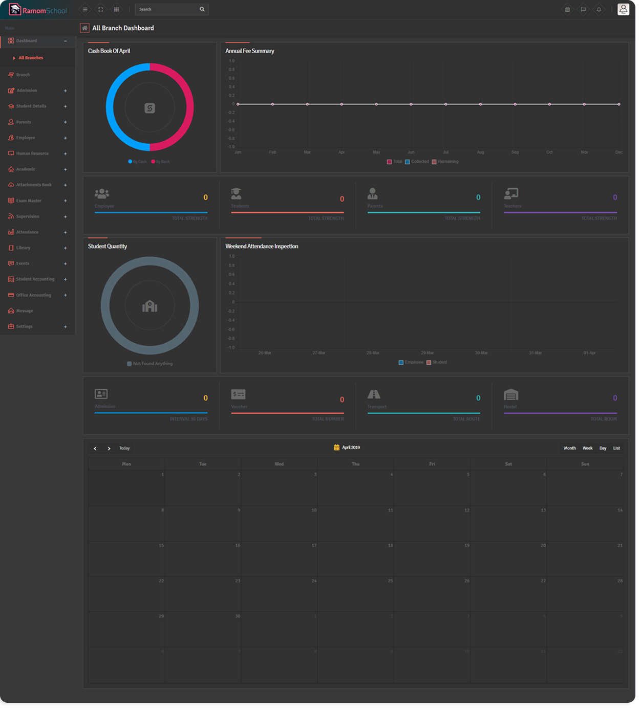
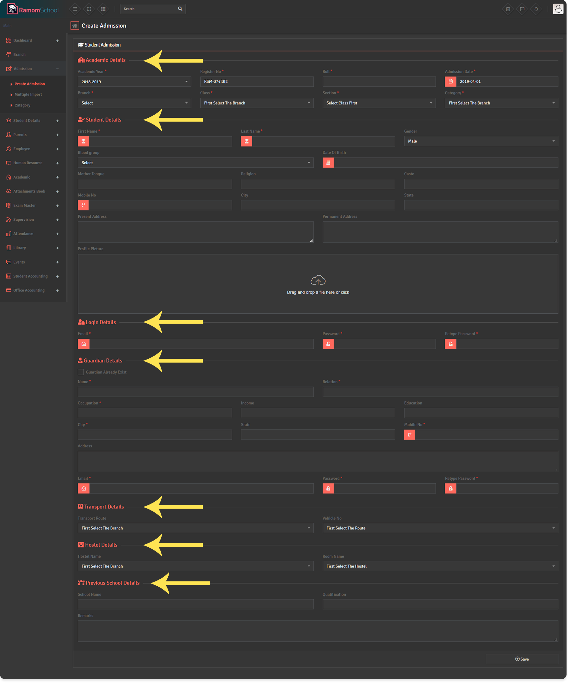

Ramom - Multi Branch School Management System
- Created: 13 / December / 2019
- Latest update: 23 / May / 2021
- Created by : RamomCoder
- Email : ramomcoder@yahoo.com
Thank you for choosing Ramom Multi-Branch School Management System. Please read the full documentation carefully before starting.
System Requirements
- PHP 5.6+
- MySQL 5.1+
- mod_rewrite Apache
- MySQLi PHP Extension
- PDO PHP Extension
- cURL PHP Extension
- OpenSSL PHP Extension
- MBString PHP Extension
- GD PHP Extension
- Zip PHP Extension
- allow_url_fopen enabled
Ramom School Installation
Configure database connection
You need to follow a few steps to complete the installation. First step Login to cPanel and create a brand new database.
- Login to cPanel by accessing www.yourdomain.com/cpanel and navigate go MySQL Databases
- Create database.
- Create user and set up user password. (write in a note username and password because needs to be re-used later)
- Add the user to the database by selecting the database and the username.
- Make sure you have checked All privileges when adding the user to the database.
- Upload Files And Install
Upload the downloaded zip file from CodeCanyon to your server. You can upload anywhere in your public_html folder or any sub-folder. Just remember that the directory where you uploaded it.
After installation Ramom School to work properly, you must make few directories/files writeable. Below are a list of directories/files you should ensure that have write permissions.
- installation_dir/application/config/config.php
- installation_dir/application/config/database.php
- installation_dir/application/config/autoload.php
- installation_dir/application/config/routes.php
- installation_dir/application/config/purchase_key.php
- installation_dir/temp
- installation_dir/uploads
You must pass the server requirements to install Ramom School.
If all server requirements passed click 'Start The Installation' button otherwise consult with your hosting provider to fix/enable them.
Enter the codecanyon purchase code and then click.
Enter the database credentials you created previously and if the database connection is successfully you will be passed to the next step otherwise, please re-check your credentials
and hostname. (Generally hostnames are ‘localhost’, but you should check with your hosting provider or cPanel)
Fill-Up the required information and click on the 'Install' button. This will save your school name and the Superadmin login credentials which will later be required to login to the application.
If the installation is successful you will see the message 'Congratulations!! The installation was successfull'
Ramom School has successfully installed. Now ready to login, you can click the URL to login
Local Server Installation
WAMP
Even if you are trying to install Ramom School on WAMP Server you need to make sure to enable the apache 'rewrite_module' and PHP extensions 'php_openssl'.
STEP 1: Click on the WAMP icon in your taskbar and click on Apache => Apache modules => rewrite_moduleSTEP 2: Click on the WAMP icon in your taskbar and click on PHP => PHP extensions => php_openssl
FAQ
If you get 404 page not found error after installation.
If you are getting 404 not found after you install Ramom School this means that you need to adjust the main folder in .htaccess file.
The .htaccess should look like this:
RewriteEngine On
RewriteBase /
RewriteCond %{REQUEST_FILENAME} !-f
RewriteCond %{REQUEST_FILENAME} !-d
RewriteRule ^(.*)$ index.php/$1 [L]
Installation on subdomain
RewriteEngine On
RewriteBase /sub_foldername/
RewriteCond %{REQUEST_FILENAME} !-f
RewriteCond %{REQUEST_FILENAME} !-d
RewriteRule ^(.*)$ index.php/$1 [L]
If there are 500 errors after installation, try the following code as .htaccess
RewriteEngine on
RewriteRule ^([a-z0-9_-]+)\.html$ index.php/page/$1 [L]
RewriteCond %{REQUEST_FILENAME} !-f
RewriteCond %{REQUEST_FILENAME} !-d
RewriteCond $1 !^(index\.php|asset|robots\.txt)
RewriteRule ^(.*)$ index.php?/$1 [QSA,L]
If there are 'No Input File' errors after installation, try the following code as .htaccess
RewriteEngine On
RewriteBase /
RewriteCond %{REQUEST_FILENAME} !-f
RewriteCond %{REQUEST_FILENAME} !-d
RewriteRule ^(.*)$ index.php/?$1 [L]
This error means that your servers PHP version is not 5.3 or higher. Contact your web host in order to update your PHP version to 5.3 or higher.
If there are 'no input file specified' errors after installation, try the following code as .htaccess
<IfModule mod_rewrite.c>
RewriteEngine On
RewriteCond $1 !\.(gif|jpe?g|png)$ [NC]
RewriteCond %{REQUEST_FILENAME} !-f
RewriteCond %{REQUEST_FILENAME} !-d
RewriteRule ^(.*)$ /index.php?/$1 [L]
</IfModule>
Ramom Multi-Branch School Usage Instructions
Ramom School Benefits & Overview
Ramom School Management is Multi-Branching education ERP System. This application will help the organization that has many Branch Schools and a SuperAdmin can control all the branches and staff. Each branch will be controlled by Admin. Information about different branches, cannot be viewed or modified by other branch users. All information will be separate and secure. It is effective and helpful for both types of schools, polytechnics and universities. There are language translation systems, Any user can change language and sessions and see all the systems in different languages and sessions record. Multiple branch systems will save your time and money, just one solution.
Ramom Multi-Branch School ERP system provides the role of 7 users - Superadmin, Admin, Teacher, Accountant, Librarian, Student and their Parent.
Superadmin Panel
Login to the first Superadmin account.
After successful login you will see the Super Admin Dashboard. You will find all the features of the Navigational overview on the screen.

Super admin panel 17 modules included -
- 01. Branch - Super admin can maintain and create the all branch. Branch is consist of Branch List, Create branch.
- 02. Admission - Consist of Create Admission, Multiple Import, Category.
- 03. Student Details - Consist of Student List, Id Card Generate And Deactivate Account.
- 04. Parents - Consist of Parents List, Add Parent And Deactivate Account.
- 05. Employee - Consist of Employee List, Add Department, Add Designation, Add Employee And Deactivate Account.
- 06. Human Resource - Consist of Payroll : Salary Template, Payment Type, Salary Assign, Salary Payment, Advance Salary, Generate Payslip, Payroll Summary / Leave Control : Category, Application / Award.
- 07. Academic - Consist of Class and Section : Control Classes, Assign Class Teacher / Subject : Subject, Class Assign, Teacher Assign / Timetable : Class Timetable, Set Exam Timetable, Exam Timetable And Student Promotion.
- 08. Attachments Book - Consist of Upload Content and Attachment Type.
- 09. Exam Master - Consist of Exam : Exam List, Set Exam Term, Exam Hall / Marks : Mark Entries, Grades Range And Tabulation Sheet.
- 10. Supervision - Consist of Hostel : Hostel Master, Hostel Room, Category and Allocation List / Transport : Route Master, Route Master, Stoppage, Assign Vehicle, Allocation Report.
- 11. Attendance - Consist of Set : Student Attendance, Employee Attendance and Exam Attendance / Reports : Student, Employee and Exam Attendance Report
- 12. Library - Consist of Books Entry, Books Category and Books Issue.
- 13. Events - Consist of Event Type and Add Event.
- 14. Student Accounting - Consist of Fees : Create Single Invoice, Create Multi Invoice, Fees Pay/Invoice and Fee Category / Reports : Fee Payment History, Fees Summary Report, Fee Paid Report and Fee Due Report.
- 15. Office Accounting - Consist of Under Group, Bank Account, Ledger Account, Opening Balance and Create Voucher / Reports : Day Book, Cash Book, Bank Book, Ledger Book and Trail Balance.
- 16. Message - Consist of Mailbox Folder and Inbox.
- 17. Settings - Consist of Global Settings : General Settings, Theme Settings and Logo Settings / Paymeny Settings : Paypal Config, Stripe Config and Payumoney Config / SMS Settings : SMS Config and SMS Triggers /
Email Settings : Email Config and Email Triggers / Session Settings / Translations / Database Backup
Go to the SuperAdmin Navigation Bar Settings > Global Settings within General Settings / Theme Settings / Logo and you can update your information.
* Note: Global settings are applicable for All Branches. Admin can not change this setting.
Systems Theme setting.
Systems Logo setting.
After updating all the settings and logos, you first need to add a Branch.
Add Branch :
- Login as Superadmin.
- Superadmin can maintain and create the Branch.
- First you have to create a new Branch, click the Branch > Create Branch tab and fill out all the information and click the Save button.
* Note : Admin can't manage branch information.
Add Sections :
- Login as Superadmin / Admin.
- For adding sections go to Academic > Class & Section > Control Classes click tab right side 'Section' and fill up form and click save button.
Add Class :
- Login as Superadmin / Admin.
- For adding class go to Academic > Class & Section > Control Classes click tab right side 'Class' and fill up form and click save button.
- You can set up multiple Section. (Example : For Class 1 can choose for Section A, Section B & Section C)
Assign Class Teacher :
- Login as Superadmin / Admin.
- For adding class go to Academic > Class & Section > Assign Class Teacher select Class and Section then select Class Teacher and click on Save button.
- You must first add teachers to add Class Teacher.
Student Category :
- Login as Superadmin / Admin / Teacher.
- For Student Addmission First we will add Student Category then take Student Admission then search Students List.
- Go to Admission > Category Add all student categories here. Student categories can be caste, community or group wise.
Student Addmission :
- Login as Superadmin / Admin / Teacher.
- For Student Addmission Go to Admission > Create Admission and fill form...
- 01. Academic Details- (Academic Year, Register No, Roll, Admission Date, Class, Section, Category)
- 02. Student Details - First Name, Last Name, Blood group, Gender, Date Of Birth and etc..(This * symbol means value is required).
- 03. Login Details - Login email and Login password
- 04. Guardian Details - Parent information already available check on "Guardian Already Exist" and select "Guardian" in list, otherwise fillup Guardian information.
- 05. Transport Details - You can select student Transportation routes and Vehicles no, otherwise skip this.
- 06. Hostel Details - You can select student Hostel and Room, otherwise skip this.
- 07. Previous School Details - The details of the previous school are not mandatory.

Multiple Import :
- Login as Superadmin / Admin
- For Student Addmission Go to Admission > Multiple Import
- Follow the instructions inside the page. Multiple students have been successfully added and will get a great deal of information on the student list completely.
Student Details :
- It maintain Student List, ID Card Denerate and Login Deactivate.
- Go to Student Details > Student List inside page has Student list click and open the selecting field as like Branch, Class, Section and press search button.
Add Employee :
- Login as Superadmin / Admin.
- Superadmin and Admin can create, edit and delete employee.
- Designation and Department for Employees to be added will be must required.
- For adding employee Go to Employee > Add Employee And fill up all information and click Save button.

Changelog
Version 1.0 (14/10/2019)
Released Date: 29 Nov, 2019
Support
Please feel free to email with your questions at ramomcoder@yahoo.com or post in the item discussion page.